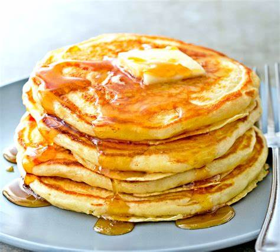

Homemade Pancake Mix

Description
Who doesn't like a fresh homemade flapjack.
But in case you've forgotten how to make your mix, here's how!
Ingredients
-
5 cups all purpose flour
-
1 1/4 cups powdered milk
-
1/4 cup powdered sugar
-
1/4 cup baking powder
-
1 tablespoon salt
Directions
-
Combine flour, powdered milk, sugar, baking powder, and salt in a large bowl, and mix well.
-
Prepare and store mixture in an airtight container, use within 8 months.
-
To make 8 4-in pancakes, use 2 cups of pancake mix, along with 1 cup of water, 1 egg, and 2 tablespoons of oil.